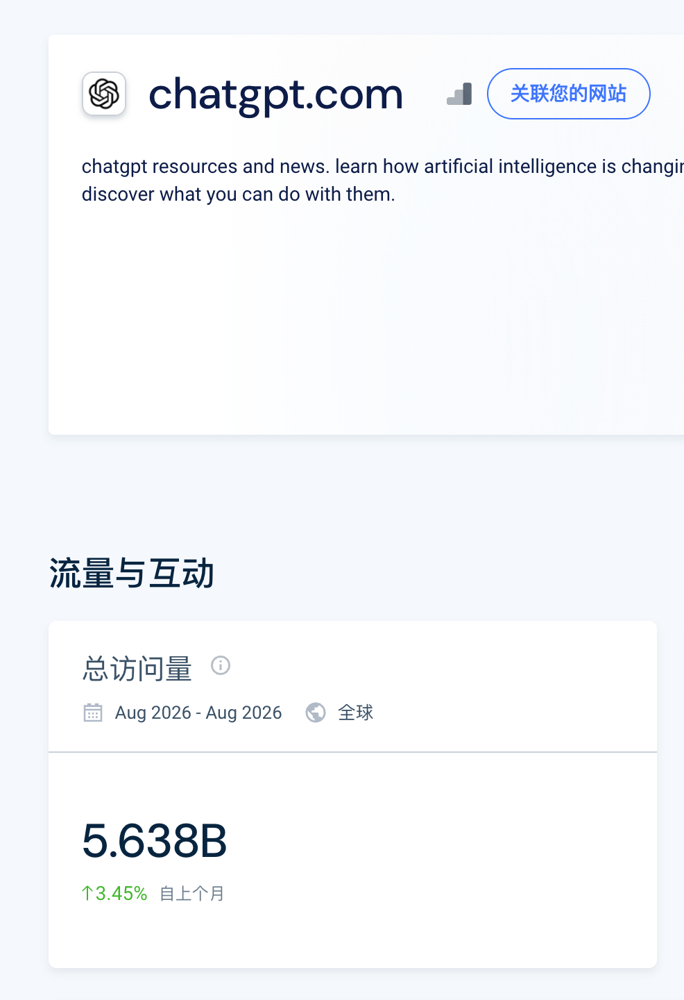
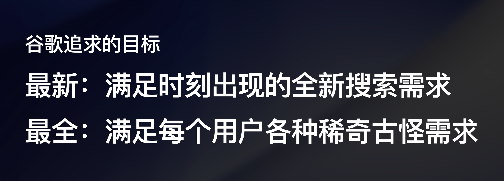
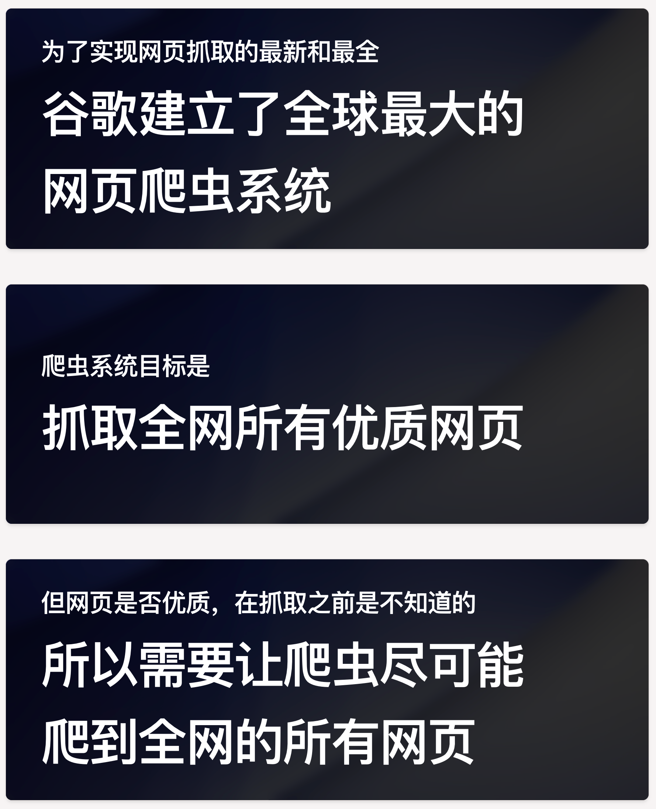

2026年10月4日的这段分享把 ChatGPT 视为新站冷启动的新入口：新站可能先被 ChatGPT 爬取，先从问答推荐拿到访问，而不是等 Google 权重慢慢建立。核心动作是围绕用户问题写清楚工具页；但具体抓取和推荐机制并没有得到 OpenAI 官方证实，下面把群友观察、截图数据与分享者推断分开记录。
先分清事实、经验和推断
这场分享最容易误读的地方，是把个人观察直接当成平台规则。更可靠的做法是先看证据层级，再决定哪些内容值得做实验。
| 说法 | 聊天中的证据 | 应如何使用 |
|---|---|---|
| 新站可能比 Google 更早拿到 ChatGPT 流量 | 分享者与群友对多个新站的经验观察 | 可作为实验假设，不能当成所有行业、所有站的普遍规律 |
| chatgpt.com 已经是巨大流量入口 | Similarweb 截图显示 2026年8月总访问量 5.638B，环比增长 3.45% | 可说明入口规模，但第三方估算不等于 ChatGPT 自有流量或推荐流量数据 |
| Google 看权重，ChatGPT 看意图 | 分享者对两种入口差异的解释 | 用于指导页面内容，但不能视为 OpenAI 官方排序规则 |
| 新词新站拿 ChatGPT 流量不依赖外链 | 近期群友案例与分享者自身体验 | 值得测试，但缺少对照组和跨行业样本 |
| OpenAI 可能监控新域名和 SSL 证书 | 分享者明确使用的猜测词“有可能” | 只能列为待验证假设，不能作为上站流程的事实前提 |
这里真正可以确定的，是分享者在 2026年10月4日观察到新站出现了新的流量来源；不能确定的是 OpenAI 如何发现网页、如何推荐产品，以及这种机会会持续多久。
为什么新词新站更容易先吃到流量
旧网站可以随着时间积累 Google 权重，但新问题出现时，所有网站面对的是一个新的用户意图。ChatGPT 需要回答实时问题，就必须找到足够新的网页与产品。对新站来说，这减少了等待权重积累的时间，竞争焦点转向“你的页面是否准确回答了这个问题”。

截图中的 5.638B 访问量说明 ChatGPT 已经具备大规模的问答入口，但它是 Similarweb 的第三方估算，只能作为规模背景。真正需要验证的，仍然是你的网站能否被 ChatGPT 发现、能否被引用，以及访问之后是否产生有效行为。
Google 与 ChatGPT 的入口差异
| 对比维度 | Google 搜索 | ChatGPT 问答入口 |
|---|---|---|
| 用户动作 | 输入关键词，再从结果列表中选择 | 直接提出问题，再阅读或点击推荐 |
| 主要竞争对象 | 搜索结果中的页面与站点权重 | 回答中可能出现的产品与网页 |
| 页面需要回答什么 | 关键词对应的搜索意图 | 一个具体问题，以及用户为什么会选择你 |
| 新站的典型难点 | 收录、权重、排名和信任积累 | 被发现、被理解、被推荐并形成正反馈 |
| 聊天中的观察 | 最快也可能 2 小时收录、12 小时来流量 | 爬虫可能更早到，流量可能更快、更多 |
这不意味着 ChatGPT 一定比 Google 更容易，而是优化信号不同。Google 仍然需要长期内容和链接积累；ChatGPT 场景下，页面是否清楚表达能力、是否匹配问题、用户使用后的反馈，可能变得更重要。
面向 ChatGPT 的工具页怎么写
- 先找出目标用户真的会在 ChatGPT 里问的问题，不要只从关键词列表出发。
- 在首屏直接回答这个问题，说明产品能做什么、适合谁、边界在哪里。
- 围绕核心主题组织文案与功能说明，让关键词密度服务于主题聚焦，而不是机械堆词。
- 用具体场景、结果和可验证信息支撑页面主张，避免把“模型会相信页面自述”理解成可以虚假宣传。
- 让页面的核心动作足够明确，例如试用、购买或提交需求，并确保访问后的体验与页面承诺一致。
分享者用“大模型是最好骗的”形容页面自述对模型理解的重要性。更稳妥的解释是：模型只能依据网页内容和用户后续反馈形成判断，因此文案既要清楚，也必须真实。短期误导会破坏点击后的体验，长期更可能损害转化与口碑。
为什么 ChatGPT 要频繁抓取新网页
分享者用 Google 的历史作类比：搜索引擎为了覆盖最新的长尾需求，必须尽可能抓取全网网页，再根据结果和用户行为不断排序。ChatGPT 既需要训练与知识更新，也需要回答刚刚出现的问题，因此同样有抓取最新网页的动力。下面三张 PPT 是这个类比的原始截图。


这个类比可以解释“为什么需要抓新站”，但不能证明 ChatGPT 的爬虫一定按同样方式工作。尤其“监控所有新域名和 SSL 证书”只是分享者的猜测，聊天里没有抓包、日志或官方文档支持。
推荐逻辑：多收候选，再用反馈筛选
分享者对“为什么每个新站都可能拿到推荐”的解释是：如果每个品类只保留一个产品，就可能错过后来更好的选择。更合理的方式是尽量抓取多个候选，再针对不同用户推荐不同产品，并用反馈判断谁更能解决问题。
- 用户看完回答后，是否点击了推荐链接。
- 用户点击网页后，是停留并完成目标，还是很快回来继续追问。
- 用户后续是否提到刚才产品的优点、缺点，或要求换一个推荐。
- 不同用户与不同问题是否应该得到不同产品，而不是全场只推荐一个赢家。
这些行为信号是分享者“怀疑” ChatGPT 会使用的反馈，不是已经验证的排序规则。站长不能直接读取 ChatGPT 内部的这些数据，只能通过推荐流量、站内行为、回访与转化结果做外部验证。
可直接执行的验证顺序
- 选择一个具体的新问题和一个明确产品意图，不要一开始就做大而全的 AI 工具导航。
- 用不同文案版本建设落地页，分别验证问题匹配、产品说明和行动入口。
- 记录来自 ChatGPT 的推荐流量、停留行为、转化与回访，不只看访问量。
- 比较不同页面版本的实际点击和成交，不根据猜测的算法提前宣布成功。
- 持续复查 ChatGPT 是否仍能发现、抓取和推荐页面；这是一条可能变化的渠道，不是一次配置就永久生效。
截至 2026年10月22日仍未解决的问题
- ChatGPT 实际依据哪些抓取、索引和推荐信号，聊天没有官方证据。
- 新站从 ChatGPT 获取的流量占比、订单质量与复购表现，聊天只有群友案例，没有完整样本。
- “新站不需要外链”是否适用于不同行业和竞争强度，尚未验证。
- 监控新域名和 SSL 证书、使用点击与回访行为排序，都是分享者推断，不能当成确定性规则。
- Similarweb 数据属于第三方估算，截图时间范围为 2026年8月，不能代表 2026年10月22日的实时流量。
完整原始记录
以下是 2026年10月4日 19:16 至 21:05 的连续分享，共 17 条消息、1 位参与者。原文按时间顺序完整保留；4 张图片已在上文对应段落展示。